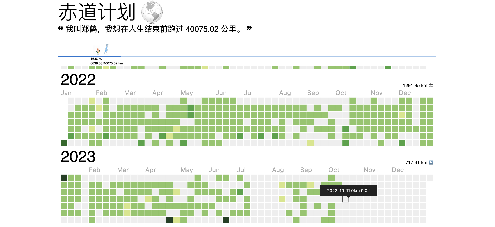
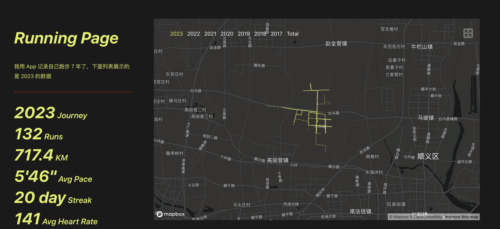

赤道计划
多数人高估他们一年能做的事，却低估他们十年能的事（Most people overestimate what they can do in one year and underestimate what they can do in ten years）。
大概在两年前，我开始酝酿「赤道计划」：在人生结束之前跑完 40075 公里，这个距离正是赤道的周长。毛主席的「坐地日行八万里，巡天遥看一千河」也来源于它。如果每两天跑一次 5 公里，大约需要 44 年。
其实我并不擅长跑步，在学生时期就从未能代表班级参加运动会。我为什么要做这件事？首先，希望自己能长期保持健康的体魄。赤道计划正好能成为一个长期的目标牵引。我也在朋友圈将这个计划「昭告天下」，让亲朋好友成为监督者和见证人，不给自己留下偷偷认怂的余地；其次，希望自己普普通通的人生能有一点与众不同，至少在迷茫的时候，我有在坚持做一件对身心有益的事情。
为了记录这个过程，我制作了「赤道计划」网站：

并将我在「小米运动」和「Keep」上的跑步数据手动录入。一开始我觉得每隔一个月手动录入一次数据，每次十来分钟，并不麻烦。但每次录数据时，心中的工程师之魂就会跳出来对这种行为嗤之以鼻。
今天我终于完成了这件重要不紧急的事情。非常感谢 yihong0618/running_page 项目提供的数据源定时同步功能，让我得以在三小时内完成数据录入自动化，甚至还拥有了专属 [running_page](Running Page)：

假设录入 1 个月数据需要 15 分钟，1 年就需要 3 小时，40 年就需要 120 小时，今天的投入相当划算！感谢我的工程师之魂。